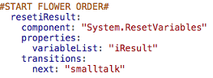
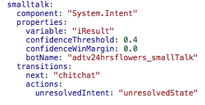
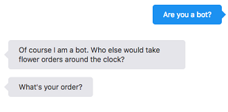
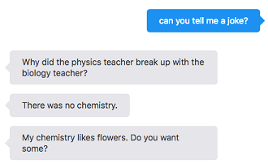

Oracle Intelligent Bots Advanced Training - Lab 8b (User Experience - Smalltalk)
Oracle Intelligent Bots Advanced Training - Lab 8b (User Experience - Smalltalk)A common customer requirement is that bots can handle small talk, like responding to questions about the weather, attempts at flirtation, or simply "Who are you?".
For this lab, we are providing a custom component that returns pre-defined responses in English, German and French. Though a simple implementation, it is easy to extend and to hook up to backend services, if needed. The point of the Smalltalk solution in this hands-on is to not get lost in conversation but to give a generic answer and to get the conversation back on track.
 Set Up Your Environment
Set Up Your Environment
- Click
 and select Development > Bots.
and select Development > Bots. - Within the tile for the
advt24hrsflowers_bot9bot, click , select Clone, and name the cloneadvt24hrsflowers_bot9<YourUniqueInitials>. For example:advt24hrsflowers_bot9JS. - Locate the tile for your clone of the bot (using the Search field might help) and click it to open the bot.
- Click in the left navigation for the bot.
- Paste your backend's ID into the Backend ID field.
- Paste your backend's anonymous key into the Anonymous Key field.
- Make sure that the completed version of your custom component implementation from lab 5 (
advt24hrsflowerscss<YourUniqueInitials>) is uploaded to the AMCe instance.
 Set Up the Smalltalk Bot
Set Up the Smalltalk Bot
The smalltalk feature is based on:
- A separate bot (called
advt24hrsflowers_smallTalk). This bot does not handle smalltalk itself, but merely helps to resolve intents. - A custom component in
advt24hrsflowers_bot9<YourUniqueInitials>, in which we create our own small talk intents and responses.
If your bot doesn't understand an intent, it hands the request over to the smalltallk bot. The smalltalk bot then returns the intent it found, and the custom component comes up with the response.
Let's get started by cloning and seting up the advt24hrsflowers_smalltalk bot.
- Click and select Development > Bots.
- Within the tile for the
advt24hrsflowers_smalltalkbot, click , select Clone, and name the cloneadvt24hrsflowers_smalltalk<YourUniqueInitials>. For example:advt24hrsflowers_smalltalkJS. - Locate the tile for your clone of the bot (using the Search field might help) and click it to open the bot.
- Click in the left navigation for the bot.
- Paste your backend's ID into the Backend ID field.
- Paste your backend's anonymous key into the Anonymous Key field.
- In the bot, click
 , leaving Trainer Ht selected, and clicking Submit.
, leaving Trainer Ht selected, and clicking Submit. - Now click
 to see the intents that are available in the bot.
to see the intents that are available in the bot. - Open the tester by clicking
 and selecting Bot.
and selecting Bot. - In the Message field, type
Do you want to go out with me?and press Enter.The bot should associate this input with the flirt intent.
- Now try
Will it rain tonight?and see what that resolves to. - Switch to the dialog flow editor by clicking
 .
.
You should see some states that have been created for testing intent resolution in a bot environment.
- Have a look at the contents of the dialog flow.
You should see some states that have been created for testing intent resolution in a bot environment.
- Click to view the custom component services.
 Add Smalltalk to Your Bot
Add Smalltalk to Your Bot
The implementation of smalltalk in our bot consists of these main parts:
- The
resetiResultstate, which directs the flow to thesmalltalkstate when the intent is unresolved. - The
smalltalkstate, which passes the unresolved user intent to theadvt24hrsflowers_smalltalk<YourUniqueInitials>bot. - The
chitchatstate, which uses theadvt.24hrs.flowers.chitchat.SmallTalkcustom component that handles responses to "small talk" requests. - The
advt.24hrs.flowers.chitchat.SmallTalkcustom component.
- Click and select Development > Bots.
- Open the
advt24hrsflowers_bot9<YourUniqueInitials>bot. - Open the dialog flow editor by clicking .
- Click the + Components button, click Variables, and select Reset variables.
- From the Insert After dropdown, select getUserIntent.
- Make sure the Remove Comments toggle is set to ON.
- Click Apply.
- Change the
resetVariablesstate name toresetiResult. - Set the
variableListproperty value to"iResult". - Add a
transitions: nextaction to theresetiResultstate and set its value to"smalltalk"The resulting state should look like what you see in the screenshot below.
 - Scroll back to the top of the editor, click the + Components button, click Language, and select Intent.
- From the Insert After dropdown, select resetiResult.
- Click Apply.
- Change the intent state name to
smalltalk. - Remove the following properties:
optionsPrompt,sourceVariable,translate. - Set the
botNameproperty value to"advt24hrsflowers_smallTalk<YourUniqueInitials>"(with quotes). - Add a
next: "chitchat"transition to thetransitionselement. - Set the
unresolvedIntentaction value to"unresolvedState". - Set the
variableproperty to"iResult".The resulting state should look like what you see in the screenshot below, except for the value for
botName, which should be your copy of the bot (with your initials in the name). - Go to the
getUserIntentstate and set theunresolvedIntentaction value toresetiResult. -
The resulting state should look like what you see in the screenshot below.

- Place the cursor below the
smalltalkstate and paste in the the custom component state given here:chitchat: component: "advt.24hrs.flowers.chitchat.SmallTalk" properties: nlpResultVariable: "iResult" locale: "en" confidenceThreshold: 0.4 transitions: next: "unresolvedState" actions: IntentFound: " resetiResult2" NoIntentFound: "unresolvedState" - Right under the
chitchatthat you just added state, add the following state:resetiResult2: component: "System.ResetVariables" properties: variableList: "iResult" transitions: next: "getUserIntent"We don't want the smalltalk feature to conflict with our bot's primary functionality. So we use the
resetiResult2state to consult the smalltalk bot's intent engine only when the main bot can't resolve the intent. - Click to open the tester and click Intent.
- Type
Do you want to go out with me?Chances are, the bot resolved to an intent (e.g. the OpenFranchise intent) or a QnA response which obviously isn't desirable. As we have seen in previous labs, training a bot is easy but disambiguating utterances is hard.
To mitigate this, we could either bump up the confidence threshold of the
advt24hrsflowers_bot9<YourUniqueInitials>bot or remove overlapping utterances from the OpenFranchise intent. - Back in the tester, try
are you a bot?In the
advt24hrsflowers_bot9<YourUniqueInitials>bot, this should come back unresolved, which is what we want. - In the tester, select Bot.
- Once again, try
are you a bot?You should see a response that acknowledges that it is a bot. It might look something like this:
 - Next try
can you tell me a joke?You should see a response which attempts to address the user request for a joke. For example, it might look something like this:
 - Now try
I'd like to order flowers.At this point the
advt24hrsflowers_bot9<YourUniqueInitials>bot takes over and enters the flow for ordering flowers. - In the tester, click Reset and play with this for a little while longer.
In addition to flirtation attempts, joke requests, or asking if it's a bot, you can try asking questions about the weather and sports.
- In the
chitchatstate, set the locale property value to "de" to try German. - Now test again, but in English.
(At this point don't have translation set up for user input. But you should be able see German responses.)
 Explore the Implementation and Build Your Own Topic
Explore the Implementation and Build Your Own Topic
This part of the lab demonstrates how the implementation works and how you can build your own smalltalk topic.
- Open the
advt24hrsflowerscss<YourUniqueInitials>custom component service in your JavaScript IDE. - Navigate to the
js/components/smalltalk/responsesfolder.The folder contains 5 files, the names of which match the names of the intents defined in the smalltalk bot.
- Open to the
advt24hrsflowers_smalltalk<YourUniqueInitials>bot. - Click to see the name pattern of the intents.
- Create your own smalltalk intent that you want your bot to be able to respond to. Follow the naming pattern (
<your topic_chat>). - In the intent, create initial utterances and train the smalltalk bot.
- Use the intent tester (click and click Intent) to ensure your intent is getting resolved.
- Go back to your JavaScript IDE.
- Create a new file using the pattern
<your topic_chat>.js. - Open one of the other files in the folder.
As you see, each file contains a JSON object that hosts an array of objects for the three supported languages in this lab. However, you don't need to implement German and French if you don't plan to use them.
The format of the file is shown below. Each response is an array of strings. When an intent is recognized, the
SmallTalk.jsfile loads your response file and randomly selects an answer."responses": { "en": [ ["","",""], ["","",""], ["","",""], ["","",""] ], "de": [ ["","",""] ], "fr": [ ["","",""] ] } - When you are done with your additions, save the project and zip the
advt24hrsflowerscss<YourUniqueInitials>root folder. - In AMCe, click and select Development > APIs.
- Open your custom API (advt24hrsflowerscss<YourUniqueInitials>).
- Select Implementation tab in the API designer.
- Upload the zip you just created to this page (by dragging it on to the page or by using the Upload an implementation archive link).
Now let's test the bot again.
- Go back to your
advt24hrsflowers_bot9<YourUniqueInitials>bot and use the intent tester to ensure that utterances you used in your intent don't resolve to any intent. - Finally, type a request into the bot tester and see what comes back.
Conclusion
Handling small talk is important, and many customers want the bot to answer it to some degree. The smalltalk implementation we've played with is a good reusable starting point that can later be extended to query more dynamic responses. We've also learned how to leverage the intent engine of another bot to help with the 24hrsflowers bot.